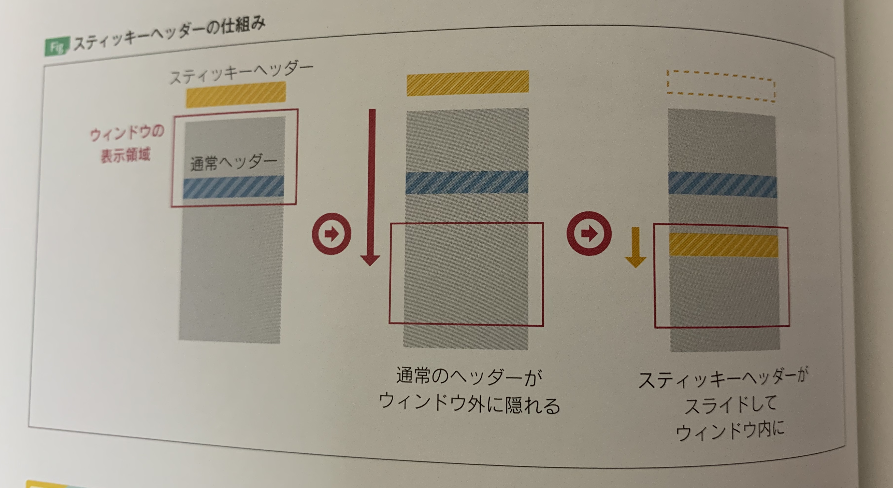

スティッキーヘッダーの概要
初期時のまま上部に固定すると見づらくなってしまうので、
上部固定の初期値から離れた場合はデザインを変化するようにすると見やすくなります。
今回は、そういったものを作成します。
スティッキーヘッダーの仕組み
「初期状態のヘッターの内容を複製し、スティッキー用のヘッダーを新たに作る」という方法で作成します
- 初期状態のヘッダーは動かさず、常に元の位置に配置する
- ヘッダーのクローンを作成し、初期状態では画面上部の外側に配置しておく
- ウィンドウのスクロールによって初期状態のヘッダーが非表示になった時点で、ヘッダーのクローンを見える位置に移動する
下記の画像のようなものを作成する

主なjQueryメソッド
- append()
- appendTo()
- contents()
- clone()
- outerHeight()
主なjQueryプラグイン
- jQuery throttle / debounce
パフォーマンスの低下を防ぐ処理
スクロールによる表示非表示でブラウザに負荷を与えてます。
軽減するには、実行頻度をある程度までに抑えられれば良いのです。
「スロットリング(throttling)」
『jQuery throttle / debounce』というプラグインで、上記の問題に対して
エラー処理を記載することができます。
実行例
$window.on('scroll', $.throttle(1000 / 15, function(){
// 省略
}))